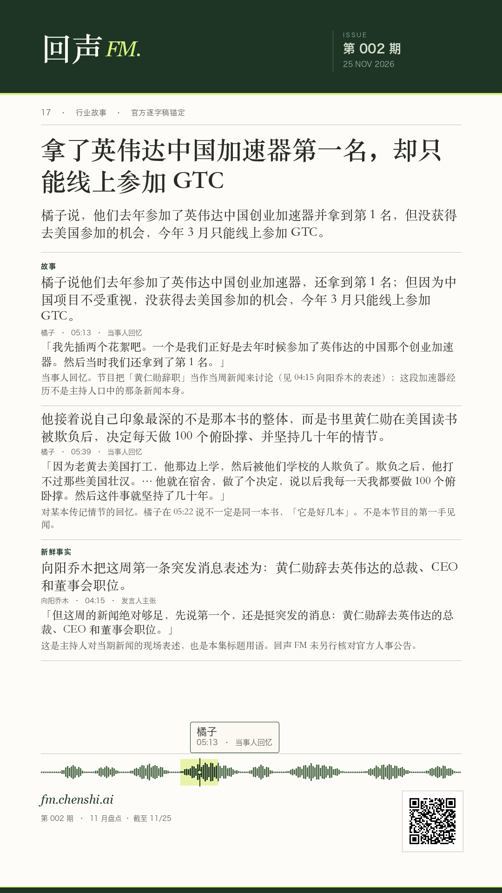

17第 002 期行业故事11.16官方逐字稿锚定
拿了英伟达中国加速器第一名，却只能线上参加 GTC
橘子说，他们去年参加了英伟达中国创业加速器并拿到第 1 名，但没获得去美国参加的机会，今年 3 月只能线上参加 GTC。
故事
橘子说他们去年参加了英伟达中国创业加速器，还拿到第 1 名；但因为中国项目不受重视，没获得去美国参加的机会，今年 3 月只能线上参加 GTC。
「我先插两个花絮吧。一个是我们正好是去年时候参加了英伟达的中国那个创业加速器。然后当时我们还拿到了第 1 名。… 但是因为中国我们这个还是比较不受重视吧，没有获得去美国参加这次的机会，我们只能线上参加，所以今年 3 月份的时候就线上参加那个 GTC。」
当事人回忆。节目把「黄仁勋辞职」当作当周新闻来讨论（见 04:15 向阳乔木的表述）；这段加速器经历不是主持人口中的那条新闻本身。
他接着说自己印象最深的不是那本书的整体，而是书里黄仁勋在美国读书被欺负后，决定每天做 100 个俯卧撑、并坚持几十年的情节。
「因为老黄去美国打工，他那边上学，然后被他们学校的人欺负了。欺负之后，他打不过那些美国壮汉。… 他就在宿舍，做了个决定，说以后我每一天我都要做 100 个俯卧撑。然后这件事就坚持了几十年。」
对某本传记情节的回忆。橘子在 05:22 说不一定是同一本书，「它是好几本」。不是本节目的第一手见闻。
新鲜事实
向阳乔木把这周第一条突发消息表述为：黄仁勋辞去英伟达的总裁、CEO 和董事会职位。
「但这周的新闻绝对够足，先说第一个，还是挺突发的消息：黄仁勋辞去英伟达的总裁、CEO 和董事会职位。」
这是主持人对当期新闻的现场表述，也是本集标题用语。回声 FM 未另行核对官方人事公告。
人物与产品
讲述者是橘子，背景是英伟达中国创业加速器和线上 GTC，引出对黄仁勋个人习惯的阅读印象。
「我先插两个花絮吧。一个是我们正好是去年时候参加了英伟达的中国那个创业加速器。」
人物与产品关系以当事人自述为准。
节目溯源
Next Token（词元之外）· #010
本期
第 002 期 · 25 NOV 2026 · 11 月盘点 · 截至 11/25
